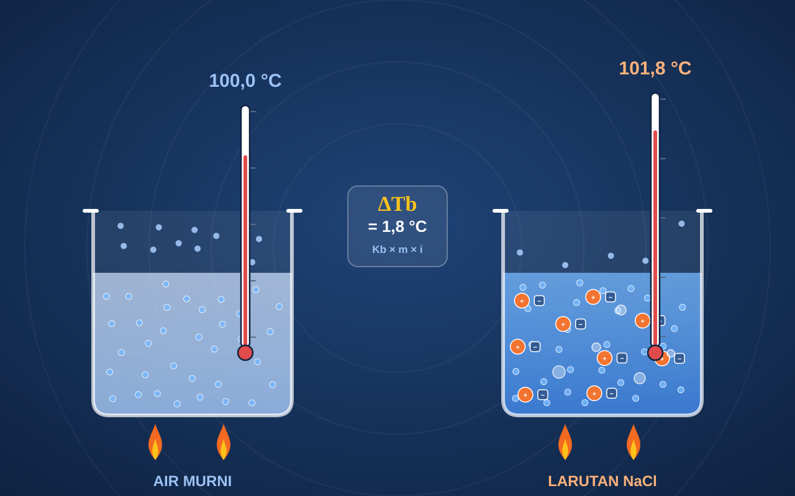

Media Pembelajaran Interaktif | Kimia Fase F
Judul Materi
Sub Judul Materi
- Belajar
- Bermain
- Lab Maya
- Berlatih

Meja Praktikum
Siap dijalankan
🔬 Eksperimen
🧪 Zat terlarut i = faktor van't Hoff
⚖️ Massa zat dalam 100 g air
Selamat Datang!
Silakan isi identitasmu sebelum mulai belajar.
Informasi Materi
| Fase / Kelas | Fase F • Kelas XII |
| Mata Pelajaran | Kimia |
| Unit | Elektrokimia |
| Sub Unit | Sifat Koligatif Larutan |
| Tujuan Pembelajaran |
Profil Pengembang

✓
Pak Sabirin
Referensi
📚 Referensi Materi
🎨 Aset Visual & Efek Suara
🤖 Keterlibatan AI
Catatan: seluruh materi, soal, dan pembahasan disusun oleh pengembang.
Selesai!
0
🎉 Praktikum Selesai!
Kamu telah menyelesaikan seluruh misi di Lab Maya.
Skor Praktikum
0